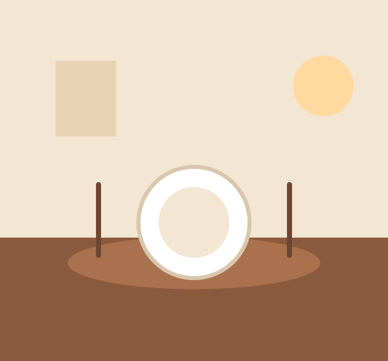

01
Para compartirCroquetas de ejemplo
Una tarjeta para mostrar el nombre y la descripción de un plato.
Una propuesta de web para un restaurante del barrio. Una mesa, buena conversación y una cocina con historia.
Explorar la propuestaProbar formularioDiseño propuesto. No es la web oficial del negocio.

Una tarjeta para mostrar el nombre y la descripción de un plato.
Contenido ficticio editable en el archivo JSON.
Una propuesta visual, no un plato verificado.
Texto de muestra para practicar el catálogo.
Un cierre dulce ficticio para esta demostración.
Sustituye estos datos por la carta autorizada.
La web oficial presenta el restaurante de Emiliano Solivellas en Pinto, con una cocina personal y una carta de vinos. Este diseño es un ejercicio independiente, no una web aprobada por el negocio.
Datos de la web pública consultada. Confirma cualquier visita con el negocio.
Lunes: cerrado. Martes, miércoles, jueves y domingo: 13:00-17:30. Viernes y sábado: 13:00-00:00.
Fuente: web oficial, consultada el 26/10/2026. Puede cambiar o tener excepciones por festivos. Este prototipo no comprueba si está abierto.
El formulario solo comprueba campos. No envía correos, no guarda datos y no comunica nada al negocio.
Probar validación PHP